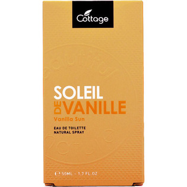
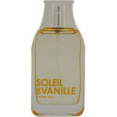

返回列表
产品名称：コテージ バニラサン オードトワレ

ウエニ貿易 コテージ バニラサン オードトワレ ５０ＭＬ
メーカー ウエニ貿易
JANコード 4548962800123
商品の特徴
フランス発ナチュラル系ブランドのコテージからオードトワレが登場しました。
甘く繊細なバニラの香りです。
成分・分量
【成分】
変性アルコール、水、香料、クエン酸、メトキシケイヒ酸エチルヘキシル、サリチル酸エチルヘキシル、ｔ－ブチルメトキシジベンゾイルメタン、黄４、赤５０４
用法及び用量
【使用方法】
手首ひじかたなどに適量スプレーしてお使いください。